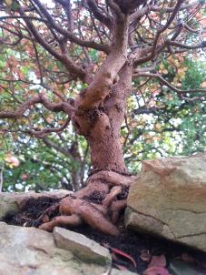
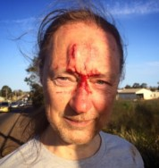

Note (added 9/12/2023, ten years on): This blog deals with terminal illness and death but I have survived much longer than expected, so in that respect it's a positive story (or not as negative as it could be). However, individual results may vary, as they say. If you or someone you care about has been recently diagnosed with metastatic prostate cancer (or similar) this blog may be a source of hope or even inspiration, but please don't let it change your expectations: hope for the best but prepare for the worst. There may be times when you get good news but there will definitely be times when the news is bad, very bad. Reading about people with more luck than you can emphasise how unfair life is and I apologise for any additional pain this blog may cause.
This page is intended to inform my friends and interested parties about my battle with prostate cancer - the latest news plus perhaps some reflections, depending on my level of inspiration. You can check https://lee-naish.github.io/pc/latest.html#latest as (in)frequently as you like rather than me sending e-mail updates. Those that know me well will not expect to follow my progress via facebook, twitter, google+, linkedin, etc, or even rss. Apologies for the somewhat impersonal nature of this, but more personal communication tends to be more confronting, which can be difficult at times.
For most of my life I have battled with CFS. At the end of August 2012 I went on a longer, more vigorous bike ride than my usual rides of around 10km. Although I felt OK the next day, it seemed to precipitate a slow decline in my health over the following weeks and months, which I attributed to CFS. I saw my local GP around the end of 2012 and had all the regular pathology tests done (again) and they were all normal (again). In early 2013 I took some extended sick leave for the period as I felt I hadn't been able to work my normal 0.5 fraction for several months. I struggled through most of 2013 but my ability to work (or do anything else) effectively did not improve significantly and ended up having my position declared redundant at the end of November and was given an honorary position.
Having been relieved of the pressure of paid work I found a new GP and had my first appointment on my last day of paid work. By then I had lost some weight, having no appetite for much of the time and not being able to exercise as much as previously. I also had occasional very painful muscle cramps in my upper legs and other pain. The normal pathology tests were ordered (again) and I suggested my prostate should be checked so a PSA test was also ordered. That weekend I had painful muscle cramps again and after giving a talk at a programming languages workshop on the following Wednesday my muscles also cramped up on the way to the post-workshop dinner. I managed to get through dinner and cycle home in significant pain (which made an existing hip problem flare up as well).
I managed to change my GP appointment to Thursday 5/12. He said my pathology results were normal except for the PSA, which was the highest he had ever seen (1200). After a physical examination he concluded I had prostate cancer and referred me to specialists at the Royal Melbourne Hospital. I had my farewell dinner with a few members of the department to attend but I briefly visited home to tell my family the awful news. I didn't mention it at the dinner, so as not to "cast rather an dampener on the evening" to quote Monty Python but e-mailed various people in the next day or so and asked that some of the e-mail be forwarded to others. Apologies to those who would have liked to be informed but missed out. There were many messages of support etc, which I appreciated, and a number of stories of other who had been diagnosed with prostate cancer but had good outcomes. Although hopeful, my situation did not look so positive.
On Monday 9/12 I phoned RMH outpatients to check my referral had arrived safely and after arranging for it to be faxed again I was able to confirm it had arrived and would be forwarded to the Urology department soon. Being a large public hospital, RMH has a two week backlog of outpatient referrals and the outpatient department closes over Christmas/New Year. My GP was concerned that my case may not be processed with the urgency he thought it deserved and kindly contacted the Urology registrar the next day and phoned me saying I had a specialist appointment on Wednesday 18/12 and he had written me a referral for a bone scan and CT scan of my pelvis and abdomen.
The next day, after returning home from the department end of year lunch, I was met by a commotion. A specialist at the RMH wanted to see me immediately. Donna and I jumped back on a tram and met with the specialist. He said that a PSA level of 1200 does not occur unless the cancer has already spread and, having conducted another physical examination, wanted to start me on hormone therapy (ADT, yet another meaning for that acronym) which drastically reduces testosterone levels and is effective at stopping prostate cancer growth for some time (up to several years). After that the cancer becomes resistant to low testosterone levels and its on to chemotherapy and clinical trials of unproven treatments to try to extend life as much as possible. Unfortunately there is no cure and removing my prostate would not have been possible or beneficial. I started the hormone treatment (which was more painful than expected at the injection sites for several days) and got the scans done over the next few days.
The scans showed widespread metastasis to bones, lymph nodes and various other organs, as feared and expected. Prior to seeing the specialist I had looked at the letters from the radiologist with my mother (a retired doctor) and also viewed the scans. Being a computer geek I copied the scans onto my laptop and was able to view some of the images with Gimp (thanks to all those people who contribute to great free software). I was too scared to ask about life expectancy, but was told that keeping fit was essential. The hormone therapy was making me feel much better. I was back on my bike, doing other exercise, feeling much less unwell and my appetite had returned. It was tempting to feel I was cured, but there was still some nagging pain/discomfort and the knowledge that all was not well at all. Donna and I have met with the psychologist who is part of the Urology Oncology team at the RMH but it takes a while for things to sink in and to really come to terms with having a terminal illness. I've been a bit slack replying to some e-mails and have been avoiding letting everyone know the extra-bad news until now (27/12/2013). I imagine my friends will understand.
I had my prostate biopsy today. It seems to have gone smoothly. The urologist I had seen previously had wanted some extra tissue for research purposes, which I was happy to supply, and I also wanted some tissue to be taken and saved for possible targeted genome sequencing etc in case it may be useful for treatments which are being developed (this was suggested to me by a cousin, a doctor who specialises in this area). Unfortunately, protocols got in the way. Tissue can only be taken for the tissue bank after there is a definitive diagnosis of prostate cancer, even with consent of the patient, and the guidelines for definitive diagnosis stipulate the use of histology. I tried my best to get around this rule, even suggesting I could get some tissue as a souvenir, but no luck. Its also necessary to have a definitive diagnosis to be included in any clinical trials (which seems reasonable) - this was one of the main motivations for getting the biopsy done, though being 100% sure of the diagnosis (rather than 99.9% sure) was another. The urologist also suggested only a small number of samples (perhaps three) would need to be taken for a diagnosis, given the size of the tumor. However, the surgeon told me the regular number of twenty would be taken.
It seems to me that the protocols are overly strict. Despite there being plenty of tissue there for the taking, and indeed plenty of tissue being taken, it cannot be used for certain potentially very useful purposes. I will either have to have another prostate biopsy, or potentially valuable information will not be gathered. I know very little about such protocols, but from my professional understanding of information privacy, I understand their importance. For example, I would expect protocols dictate that tissue should not be collected without a clear purpose for the collection. One possible way of weakening the protocols is to increase the role of patient consent, though there is often a difference between consent and informed consent. Another possibility is to use somewhat weaker guidelines for diagnosis for the purpose of collecting tissue. In my case, for example, there it seems very clear I have prostate cancer even though there are no histology results thus far (and the lack of such results has not prevented me from starting, and benefiting from, hormone treatment).
The definitive diagnosis was somewhat of an anti-climax as my appointment with the specialist was cancelled. However, I was told that 9 of 15 cores had cancer (I'm not sure what happened to the other rumoured 5 cores, but if you are into conspiracy theories I'm sure you can come up with some ideas). The Gleason score was 4+3=7, which was rather less than I expected (not even an H1). I guess thats good news, though I really don't know how it affects the prognosis given the cancer has spread all over the place already.
Thanks for all the e-mails of support I have received. Perhaps the most profound was "Its hard to take in" (I feel the author of this comment deserves some recognition, but I have generally been avoiding names here for reasons of privacy). Like many important insights, its kind of obvious once its been stated. I'm sure many of my colleagues would have read new research papers and thought "Of course! I could have figured that out" - I have certainly had that experience. I think its a sign of a very good idea. It explains why I have received some e-mails which could be considered insensitive or thoughtless.
There are (at least) two distinct ways we take things in. One way in is intellectual. For me at least this was pretty fast. The plot of the cumulative probability of my death now goes up a lot quicker than before and the area under it has increased by around 30, at a guess. Even the non-cumulative probability of death looks bad:-). From the cosmological perspective, me being dead for an extra 30 years is insignificant, but from a personal perspective it is quite significant.
The other way we take things in is emotional. For me this is much slower. It took about a week for me to be affected much emotionally. Its also a lot harder, and there is more resistance. The force of denial is strong and I think thats why its hard to take in. The emotional aspect also impedes taking things in intellectually, significantly so for many people it seems. Belief is influenced by our intellects (as a scientist I'm particularly attuned to this) but also our emotions. This may have some advantages for survival, but it certainly has some disadvantages as well. I'll defer a rant on religion to another time, but the most accurate way of predicting what will happen to my health over the next few years is science, with as little influence of emotion as is possible.
I had a lovely day yesterday. Perfect weather for a picnic with family and a few friends to celebrate my 54th birthday. Its a shame every happy time is tinged with sadness. The better my quality of life, the sadder it is that my quantity of life is so limited. It was also Australia day. I don't celebrate Australia Day and have never become an Australian citizen. I once vaguely intended to, but never got around to it. I used to joke that I was offended that I would have to pledge allegiance to The Queen - how dare anyone question the loyalty of a British citizen such as myself! But when Australia invaded Iraq I decided I would never become a citizen.
A question I asked at the time was what burden of proof should be required before we invade another country. To deprive one of our citizens of their liberty we must prove beyond reasonable doubt that they are guilty of some significant crime. Surely we need at least as high a bar in order to justify invading a country, which inevitably leads to the death of many people, including innocent civilians. But it was clear at the time to any thinking person that the case that Iraq had "weapons of mass destruction" was weak - there was certainly reasonable doubt, and many people expressed it. Props such as vials of white powder and diagrams produced by the best amateur graphic artists of the US military are no substitute for hard evidence. It seems like pretty much all countries do many bad things, and I'm not prepared to swear allegiance to any of them.
I went rock climbing last Sunday, for the first time in over a year. Last autumn I recall not even being well enough to climb the fig tree. Since it was 40 degrees in Melbourne, Camels Hump was the place to be. It was warmer there than expected - in the low to mid thirties. Just two of us went - others being busy with work or prior commitments at the beach. We did Grey Arete, our traditional warm up, then after lunch I managed to get up the nearby "traditional" grade 17(?) (always a bit of a struggle). The grade 21 (I thought it was 19) next to it was too much for me - my forearms didn't have the strength for small face holds (and perhaps my technique is not what is used to be), but I got hauled up it. It was good to get back on the rock. I had hoped to go to Arapiles some time this month but the weather and various other things are not looking promising. There is a very nice looking grade 21 I have been eyeing off for years, which I would like to climb one day...
I also joined a gym and have been going on most week-days. Its just across the road, which is convenient. The main motivation was to help maintain bone density. One of the side-effects of the medication I'm on is lower bone density, plus the cancer destroys bone (most prostate cancer also builds bone but mine is one of the unusual ones which doesn't). Its also "essential" to stay fit according to my specialist. The week in January when most days were over 40 degrees was not very conducive to cycling. It was more pleasant to pedal in air-conditioned relative comfort (though its particularly boring and it feels like you always have a head wind which doesn't even dry your sweat). Being partly responsible for the excessive carbon footprint does make me feel bad though (more on that another time, perhaps).
Another side-effect of the medication is weight gain. I want to eat all the time. Although I was happy to re-gain the weight I lost over the last year, when I forced myself to eat despite lack of appetite, I don't want to put on too much fat (especially not when I think of that grade 21). I now appreciate more how hard it is for some people to maintain a healthy weight. Our apricot and nectarine season has come and gone, and despite sharing them with bats, birds, rats and possums, I pulled my weight. Now the bumper pear crop is ripening, and if it cools down a bit and we get some rain, there will be the figs to get through (and they are so delicious its a shame to waste them:). Having no testosterone makes building muscle more difficult as well, so I have to work hard on that. So far its seems OK. I've build up my previously weak upper body at the gym somewhat, though a dodgey shoulder has held be back a bit. I don't think its from the cancer - the pain is different. Recently my legs have felt a bit weaker on the bike though. I don't feel like I have the acceleration I once had. Perhaps the lack of testosterone take a while to have an effect, or maybe my leg muscles have just felt a bit tired.
Today the forecast was 40 degrees again, but we had a cool night and the morning was pleasant so I decided to go for a ride to burn off some fat. I planned on 20km but ended up repeating the ride I did at the end of August 2012 (to the western ring road and back along the Moonee Ponds creek) - the first time I have managed to do so. I bought my "bike computer" the day after that ride and have been wondering how long it was and what my average speed was ever since. I managed to repeat my previous time, around 34km in an hour and twenty minutes. Not quite as long/fast as I thought, but a lot faster than most people would do it.
Another side-effect is hot flushes. They are certainly an irritation. Perhaps the worst thing is not getting a decent nights sleep due to waking with a hot flush several times a night. There is medication available to stop them, but it tends to increase the growth of the cancer, so I think I'll put up with them for now. I've just started drinking sage and licorice root tea, which supposedly helps (and licorice root is delicious, I think). But overall I have to say the treatment is fantastic. I was in a pretty sorry state at the start of December, and would no doubt be in an even worse state now if I hadn't been diagnosed and treated. I'll be in a similar (and worse) state sooner or later, but I'm hoping the treatment works for a long time. The only symptom it hasn't helped with is some abdominal pain which seems to be getting worse rather than better, which is a bit of a worry if the pain is indeed related to the cancer. Earlier this week I had a blood test to check kidney function and next week I'll be having another abdominal scan so the specialists can get a better idea of whats going on. Hopefully it wont be serious (I guess "serious" has a somewhat different meaning when you have a terminal illness).
Why would I be quoting this classic bit of newspeak from Orwell's 1984? It turns out there is an element of truth in it. When you are fighting a battle which can be won, the more knowledge you have the better - ignorance is definitely not strength. But when you are fighting a battle which you will inevitably lose, knowledge can be depressing and weaken you - ignorance can allow you to maintain strength. Reading about prostate cancer gives me more knowledge but is depressing. Even research articles which increase our understanding and may ultimately help with significantly extending life tend to have an introduction containing phrases such as "universally fatal" or the somewhat less direct "poor prognosis". So I now generally avoid such reading.
Despite this, in ten minutes I'll be off to see the specialist and I intend to have the difficult conversation about my prognosis. I'm sure lots of people want to know. I guess I do as well, but I don't want too much information. I want enough information to make some sensible decisions (as a colleague joked, at some point I should say I'm unwilling to take on new Ph.D. students and will only accept M.Phil. students). But most decisions don't require extra information, and extra information is likely to be bad news, which is unhelpful. Time to jump on my bike...
I had a surprisingly pleasant meeting with the specialist. Its great that people who deal with terminal illness all the time can be so positive. I guess one reason is they are able to help people a lot, if only for a limited time. If I had not started treatment in December I would now be in a wheel chair with spinal cord collapse. Instead, my PSA level has dropped from 1200 to 0.7 - an excellent response to the hormone therapy - and I'm living an active and reasonably productive life (I've recently had more progress on my research on programming languages and have a new Ph.D student starting shortly). The abdominal scan showed nothing that can't be fixed with a good dose of laxatives. So, how long will the good life, or any life, last? The hormone therapy is typically effective for 18 months to two years (though this can vary quite a lot). After that there are a growing number of chemotherapy options available, and I'm likely to try out some of the new ones. I asked for a somewhat optimistic assessment of how long I have to live. It seems its very likely I will be alive in five years but rather unlikely I will be alive in ten years. Things could definitely be a lot worse.
I'm back from visiting what seems like another world. Five days at Mt. Arapiles - "the Mecca of rock climbing". It seems the earth is too big for us and we like making our own little worlds, from religious cults to universities. As a colleague of mine said to our newly arrived PhD student "the religion here is computer science". A good university as a whole, and even a department such as ours within it, is a melting pot of people from all over the world with shared values (and pretty reasonable ones, I would say). Arapiles is the same (at least outside holidays when the churn of short term visitors tends to swamp the local culture), and the religion is rock climbing. For the first time ever I got to stay in the premium camping spot - between the two big pines in the gums. Our closest neighbours were two women from Sweden and England. One had previously visited Arapiles and planned on two weeks but stayed for five months. The other had minimal gear, having ridden to Arapiles on a borrowed bike from Rye. Its nice that such people are not above gleaning useful things such as sleeping bags from rubbish bins, though I do find some of the culinary exploits a bit shocking at times.
Arapiles a very mellow and friendly place. I guess all the tension goes on fighting the common enemy - gravity. Mostly we are victorious but no damage is done - gravity is the most resilient of foes. Sometimes it wins and some damage is done to a climber's ego, but they are pretty resilient also. My climbing partner, like me, is probably past his "best before" date, but we lead a bunch of easier climbs and top-roped a few not so easy ones. Most were classics we had done plenty of times before (eg, The Bard, Muldoon, Mantis) though not so recently, and were still great to do. Rather than do Brolga again I though we should try something a bit easier and did Mantle instead. The start of the first and second pitches seemed to have even less protection than Brolga, so it was "interesting" for a while - climbing is great at taking your mind off other worries. Its a shame guide books don't always warn about such things. However, it was nice to see the latest edition of the selected climbs guide - it is certainly an improvement over the first edition. The photo of me climbing The Bard is now in colour and the caption now has my name, plus the description of my climbing has changed from "time honoured" to "grace and style". Accuracy is absolutely essential in a guide book for something as potentially dangerous as rock climbing and I congratulate Simon on his impeccable research, evocative descriptions and wonderful selection of stunning images.
We left on Saturday morning, to avoid the worst of the long weekend crowd (predicted to be particularly bad due to much of the northern Grampians being burnt out and not accessible for climbing). But before leaving we did the first pitch of Resignation, a great climb, and took the opportunity to abseil down over No Future (the grade 21 I mentioned above). The abseil bolts make a reasonable top-rope anchor, as I had hoped. It has that great Arapiles rock and although the climb was not quite how I had vaguely remembered it, that was more than made up for by the great sequence of moves with the mono (single finger pocket). I managed to get up it with one rest, so I can more or less tick that one off.
I've been feeling rather lazy recently. I skipped gym last Wednesday, did no exercise yesterday and today I've continued to hang around the house, stewing more of our pear crop and working on a paper on my new programming language. Maybe its the weather - summer is definitely over and its been cool and cloudy the last couple of days. The fig season is coming to an end. Its hardly rained this year and even with all our grey water the tree is a bit dry but they are still delicious as usual. Soon the house will be cold and it will be back to snuggling into a sleeping bag to keep warm. This afternoon with great difficulty I summoned up the energy to jump on my bike and go for my standard ride. I didn't make great time, but I noticed the odometer when I got on. When I was initially diagnosed I set a tentative goal or aspiration of riding another 10,000Km before having to give up cycling. On the ride today I completed the first 1000Km, so it looks like I'm on track so far at least.
I saw the specialist again on Wednesday. My PSA level has dropped further, to 0.1. It won't go any lower than this, but such a low level means it is also likely to stay low for a good period of time, improving my prognosis. It seems I'm very lucky. On the other hand, you might say that having chronic fatigue syndrome for most of my life then getting prostate cancer at a relatively young age and it not being diagnosed until after it had spread throughout my body, makes me extremely unlucky. But I do consider my self lucky. I was born into a life of wealth and privilege. Even working half time in a not particularly senior position at the university gave me a higher income than 99% of humanity. Many of my friends find it hard to believe just how lucky we are in Australia. I've also been able to travel the world, had access to excellent education, great health care (limited as it may be), comfortable accommodation, a plentiful supply of great food, good sanitation and clean water (around a billion people don't even have this). Many people have offered to help me in whatever way they can, which I appreciate of course. But there are billions of people who deserve help more than I do, and whose lives can be dramatically changed for the better far more easily than mine.
I think its important to consider the big picture. The Chaser did this very well in their Make a Realistic Wish Foundation spoof. I guess the not so funny punch line at the end was the trigger for the avalanche of criticism, apologies, program suspension, sacking, etc. (arguably fuelled by conservative political forces not amused by previous Chaser material). I think its important to maintain a sense of humour also.
I've been meaning to add another post for quite a while, at least to inform people about how things are going. I have been busy and was never really satisfied with my last post and that may have put me off a bit also. It failed to draw the distinction between money and happiness, amongst other things. Anyway, the winter solstice has passed, along with the end of the financial year. Speaking of money again, I donated most of the salary I received, my last opportunity to take advantage of tax deductibility.
I changed medication a while back. I didn't react to the injection of the new medication and its done only once every three months, so its a great improvement, though I have experienced a bit more fatigue since. I had my 100th visit to the gym, and got the tee-shirt to prove it this week. I still go on most week days and have gained quite a lot of strength and fitness. Yesterday I did a workout which included 63 pullups/chinups - a record for me. I've gained some muscle and not too much fat fortunately. It does take up a fair bit of valuable time and today was a bit of a struggle due to low energy levels but mostly I don't mind working out. We had a family holiday (including my mother and brother plus his wife) for a week in Cairns and I even went on a jog one morning, which is also a first for me. My condition and a recent decline in the health of my mother no doubt affected the overall mood but we all had a good time. It was certainly nice to get away from the Melbourne winter, though getting back was a bit of a shock to the system.
The main thing keeping my brain active has been implementing my new programming language. To be more specific, ripping the guts out of my earlier prototype and replacing it with something more flexible, then adding things like type inference and the current challenge: sharing analysis of higher order code with destructive update. Complicated programming can be slow going, but hopefully its worthwhile. Knowing I have relatively little time left does make me think more about the value of everything I do.
I've been feeling in pretty good spirits most of the time. I started a new bonsai, which indicates a degree of positivity. Soon after I was first diagnosed I was given a plant for a bonsai and didn't appreciate it so much as its a reasonably long term project to create a decent bonsai. Just to brighten up this page, below is a photo of one I started about 10 years ago. Its frustratingly hard to take a good photo of a bonsai, but the camera technology in phones these days certainly helps (you can click on the image for a higher resolution version).
I saw the specialist again last week. My PSA level is still 0.1, which is excellent, but there were a couple of things the specialist said which I had mixed feelings about. One was that its getting close to a year since I was diagnosed. The longer my PSA level remains low, the better, so in some sense what he said was good news. But every month which passes makes it a month closer to my death, so I prefer to under-estimate the time since diagnosis rather than over-estimate it. The other was that a very recent clinical trial has indicated that for people such as myself (diagnosed with widespread metastasis), a course of chemotherapy immediately after diagnosis along with hormone therapy is typically beneficial (those who had the chemotherapy lived almost a year and a half longer than those who only had hormone treatment). Unfortunately, its too late for me. While its great that the science is progressing, its frustrating that I missed out on this new information. Its rather tempting to think that if a course of chemotherapy is helpful immediately it may well be helpful after eight months, at least for someone who doesn't understand prostate cancer much (not that anyone understands it that well). However, that option doesn't seem to be available to me, for reasons I don't fully understand.
So, whats all this about online cultural heritage? The original domain name for our department (cs.mu.oz.au), used for my e-mail address and, when the world wide web was invented, my home page, will no longer be supported by the university. It was Robert Elz, working in our department, who brought Australia into the internet age, and this was the first Australian internet domain. I believe it has significant heritage value and have been lobbying for it to be retained, but it seems my belief is not shared with the management. My preferred e-mail address changed some time ago and my new web home page will be at https://lee-naish.github.io/ and this page will be at https://lee-naish.github.io/pc/latest.html. Currently the pages exist but I have not yet moved things over properly. From home I am connected to the national broadband network, and can connect to the university virtual private network and mount the filesystem where the web pages are stored (technology has certainly moved on since my home page was created), but for some reason the file system is read only, so I can't easily update them. But it might be best to bookmark the new page (you can always follow the link at the top).
Its been three months since my last update and my PSA level is still reportedly (less than) 0.1. Its been a bit of a bumpy ride. My brother in law and his wife went on an overseas trip and he died of a sudden massive heart attack while away. A totally unexpected tragedy. In some sense its not a bad way to go, but its rather inconvenient for those who are left around, and he was way too young. Funerals have a bit more meaning for me now, and though such things bring the family closer together, its been hard on us all.
I participated in my first clinical trial, assessing immune system response to exercise in men with prostate cancer undergoing ADT. The results of the trial are not yet out, but I got some data on my own physical health. My VO2 Max on a stationary bike was 43.9ml/kg/min, which puts me around the 85th percentile for my age and sex, or about typical for someone in their twenties. My maximum workload was 340 Watts, maximum heart rate was 175 and I have 20.5 percent body fat (rather more than before being diagnosed, I'm sure). It seems like such as waste of a good body, a good mind and a good person. A glitch with some prostate cells and it all comes crashing down. Its like a quality DVD player you see thrown out for hard rubbish because the laser is dodgey and its not worth getting it fixed. Rich countries such as Australia are generally considered materialistic, yet we throw out so many goods which would be repaired in poorer countries where labour is relatively cheap, as is life itself. Here a car is worth far less than the driver, but thats not true in very poor areas. In that sense we are actually less materialistic, because we can afford to be. Fixing a car is easier and less expensive than fixing a human being. I had intended to write more on this but for now I'll let you ponder on this apparent contradiction.
Another bit of excitement was going on a bike ride with a friend who had just returned from the world championship amateur road cycling race. I "had a bit of a tumble":
We rode 20km back to the car and it wasn't until a couple of days later I found out I had a fractured bone in my hand which required plaster for two weeks then a splint for another four. Its been rather a nuisance cycling and only using one hand at the gym. I'm now back to using both hands and building up the weight and intend to try climbing soon. I've also seen an exercise physiologist who has a particular interest in cancer, so my workouts have been adjusted somewhat.
Mentally I'm not feeling particularly sharp, especially my memory (a known side-effect of ADT), but I have made good progress on my new programming language, Pawns, so I can still design and implement some rather complicated things. My mother has also lost considerable mental and physical capacity and has "downsized" her accommodation. Thats also been a source of stress. Emotionally I've been pretty positive, though thinking about death rather more than I would like. Sometimes been a bit vague isn't so bad - you can just go with the flow. Hopefully its not too frustrating for those around me. Hmm, time to go to gym...
Next page, March 2015-October 2016
If this upsets you (and you are in Australia) call Lifeline on 131114.